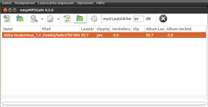
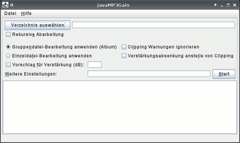
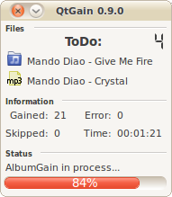

MP3Gain-GUI
Dieser Artikel wurde für die folgenden Ubuntu-Versionen getestet:
Ubuntu 16.04 Xenial Xerus
Ubuntu 14.04 Trusty Tahr
Zum Verständnis dieses Artikels sind folgende Seiten hilfreich:
Das Programm mp3gain, welches zur Analyse von MP3-Dateien dient, um diese dann auf einheitliches Lautstärkeniveau zu bringen, stellt ein reines Kommandozeilenprogramm dar, verfügt also über keine grafische Benutzeroberfläche (GUI). Dieser Artikel gibt eine Übersicht über grafisch bedienbare Programme, die auf mp3gain aufsetzen.
Programme¶
easyMP3Gain¶
In den offiziellen Paketquellen findet sich easyMP3Gain  , das aber auch für VorbisGain und "AACGain" verwendbar ist. Somit können .mp3-, .ogg-, .oga-, .mp4- und .m4a-Dateien bearbeitet werden. Das Programm ist vom Aussehen her an die Windows-Oberfläche angelehnt.
, das aber auch für VorbisGain und "AACGain" verwendbar ist. Somit können .mp3-, .ogg-, .oga-, .mp4- und .m4a-Dateien bearbeitet werden. Das Programm ist vom Aussehen her an die Windows-Oberfläche angelehnt.
Installation¶
Die GTK+-Version von easyMp3Gain wird über folgendes Paket installiert [1]:
easymp3gain-gtk (universe)
 mit apturl
mit apturl
Paketliste zum Kopieren:
sudo apt-get install easymp3gain-gtk
sudo aptitude install easymp3gain-gtk
Alternativ steht ab Ubuntu 14.04 ein Paket basierend auf der Grafikbibliothek Qt zur Verfügung:
easymp3gain-qt (universe)
mit apturl
Paketliste zum Kopieren:
sudo apt-get install easymp3gain-qt
sudo aptitude install easymp3gain-qt
Im Anschluss kann das Programm über den Befehl easymp3gain bzw. easymp3gain-qt gestartet werden [2].
Bedienung¶
 Man fügt die zu bearbeitenden .mp3-Dateien entweder durch das Menü "Datei -> Verzeichnis hinzufügen -> Datei(en) hinzufügen" oder durch Drag&Drop hinzu. easyMP3Gain unterscheidet zwischen "Analysieren" und "Lautstärke Anpassen":
Analysieren mit den Menüpunkten:
Analysiere Lied
Analysiere Album
Analyseergebnisse löschen
Dabei wird nur der Tag in der Datei gesetzt, dass sie leiser oder lauter abgespielt werden soll. Das Programm, mit dem die Datei später abgespielt wird, muss hierzu Replay Gain unterstützen.
Anpassen mit den Menüpunkten:
Lied anpassen
Album anpassen
Konstante Anpassung
Anpassungen rückgängig
Dabei wird die Lautstärke der Datei wirklich geändert. Die komplette Datei wird also neu geschrieben.
Es lassen sich sowohl einzelne Lieder als auch ganze Alben analysieren oder anpassen. Bei ganzen Alben werden alle Dateien in einem Verzeichnis als ein Album aufgefasst und davon die Albumlautstärke ermittelt, die dann angepasst wird.
Möchte man nur bestimmte Titel oder Alben in der Liste bearbeiten, so markiert man diese vor dem Analysieren/Anpassen und wählt im Menü "Optionen -> Nur markierte verarbeiten".
JavaMP3Gain¶
Installation¶

Um diese grafische Oberfläche benutzen zu können, muss Java installiert sein. Nun lädt man von der Projektseite  das Archiv JavaMP3Gain_Version.zip herunter, entpackt [3] es und macht die Datei "javaMP3Gain.jar" ausführbar [4].
das Archiv JavaMP3Gain_Version.zip herunter, entpackt [3] es und macht die Datei "javaMP3Gain.jar" ausführbar [4].
Hinweis!
Fremdsoftware kann das System gefährden.
Im Anschluss kann das Programm gestartet werden [2].
Bedienung¶
Die Bedienung des Programms ist intuitiv zu erfassen. Mit "Start" werden die Veränderungen angewandt.
| JavaMP3Gain | |
| Option | Beschreibung |
| Verzeichnis auswählen | Pfad in dem die MP3-Dateien liegen. |
| Rekursive Abarbeitung | Unterordner werden eingeschlossen. |
| Gruppendatei-Bearbeitung anwenden | Alben werden auf ein einheitliches Niveau gebracht. |
| Einzeldatei-Bearbeitung anwenden | Jede Datei wird angepasst - Album wird nicht berücksichtigt. |
| Vorschlag für Verstärkung | dB anpassen - default: 89 dB |
| Weitere Einstellungen | Zusätzliche Einstellungsoptionen sind unter "Hilfe -> MP3Gain-Einstellungen" zu finden. |
QtGain¶
Ein weiteres Frontend ist QtGain , welches MP3Gain (.mp3), VorbisGain (.ogg), AACGain (.mp4/ .m4a) und Metaflac (.flac) unterstützt.
Installation¶
Das Programm ist den offiziellen Paketquellen verfügbar. Es muss lediglich das folgende Paket installiert werden.
qtgain (universe)
mit apturl
Paketliste zum Kopieren:
sudo apt-get install qtgain
sudo aptitude install qtgain
Fremdpaket¶
Die aktuelle Programmversion mit zusätzlichen Funktionen (s.u.) kann von der Projektseite im Quellcode oder als fertiges DEB-Paket sowohl für 32-Bit als auch für 64-Bit heruntergeladen werden.
Hinweis!
Fremdpakete können das System gefährden.
Bedienung¶

Das Programm kann über den Befehl QtGain gestartet werden (Klein-/Großschreibung beachten!). Die GUI wurde bewusst minimalistisch gestaltet. Dateien können über Drag&Drop einfach hinzugefügt werden, die Normalisierung geschieht ohne weitere Interaktion des Benutzers automatisch. Bereits normalisierte Dateien werden übersprungen, etwaige Fehler werden am Ende des Vorgangs in einem Fenster angezeigt.
Mass-Renamer¶
QtGain kann ab Version 0.9.0 auch MP3-Dateien und Verzeichnisse selbstständig umbenennen, sofern id3v2 installiert ist und die MP3-Dateien ordentlich getaggt sind. Unter Einstellungen kann eine eigene Maske angegeben werden, nach welchem Schema die Dateien oder Verzeichnisse umbenannt werden sollen. Mit dieser Funktion können auch größere Sammlungen innerhalb kurzer Zeit komplett umbenannt werden.
Cover Arts Downloader¶
Es kann eine sehr mühselige Angelegenheit sein, Alben-Cover für eine größere Sammlung manuell heraussuchen zu müssen. Aus diesem Grund hat QtGain eine eigene Funktion bekommen, die automatisiert Alben-Cover aus dem Internet beziehen kann. Zur Auswahl stehen Amazon.com und die Bildersuche von Google. Die Bilder werden lokal in den jeweiligen Verzeichnissen gespeichert und am Ende wird eine Übersicht aller Bilder angezeigt. Sollte das gefundene Bild nicht gefallen, kann mit der rechten Maustaste ein anderes heruntergeladen oder das unerwünschte von der Festplatte gelöscht werden. Auch diese Funktion benötigt "id3v2". Die Funktionen sind natürlich auch jederzeit abstellbar oder können je nach Wunsch getrennt aktiviert werden.
Zu den Einstellungen gelangt man durch das Kontextmenü über den Punkt "Configure", wo sich alle wichtigen Einstellungen vornehmen lassen. Installierte Replay-Gain-Tools werden mit einem grünen Häkchen angezeigt, nicht installierte haben ein rotes Symbol.
wxMP3gain¶
Ein junges Projekt, zu dem noch keine weiteren Informationen vorliegen, ist wxMP3gain .
Installation¶
Das Programm ist nicht in den offiziellen Paketquellen enthalten. Zur Installation verwendet man daher entweder ein Fremdpaket oder ein "Personal Package Archiv" (PPA) [5].
Fremdpaket¶
Über die Projektseite kann ein Fremdpaket heruntergeladen und manuell installiert werden.
Hinweis!
Fremdpakete können das System gefährden.
PPA¶
Adresszeile zum Hinzufügen des PPAs:
ppa:cfgnunes/ppa
Hinweis!
Zusätzliche Fremdquellen können das System gefährden.
Ein PPA unterstützt nicht zwangsläufig alle Ubuntu-Versionen. Weitere Informationen sind der  PPA-Beschreibung des Eigentümers/Teams cfgnunes zu entnehmen.
PPA-Beschreibung des Eigentümers/Teams cfgnunes zu entnehmen.
Damit Pakete aus dem PPA genutzt werden können, müssen die Paketquellen neu eingelesen werden.
Nach dem Aktualisieren der Paketquellen kann folgendes Paket installiert werden:
wxmp3gain (ppa)
mit apturl
Paketliste zum Kopieren:
sudo apt-get install wxmp3gain
sudo aptitude install wxmp3gain
Links¶
How To Install And Use MP3Gain
- Blogbeitrag, 01/2011Suche Programm für db Anpassung
 - linuxforen.de, 08/2005
- linuxforen.de, 08/2005soundKonverter - ermöglicht u.a. automatisiertes Berechnen von Replay Gain, für die Formate FLAC, OGG-Vorbis, AAC, M4A und MPC (Musepack)
- Erstellt mit Inyoka
-
 2004 – 2017 ubuntuusers.de • Einige Rechte vorbehalten
2004 – 2017 ubuntuusers.de • Einige Rechte vorbehalten
Lizenz • Kontakt • Datenschutz • Impressum • Serverstatus -
Serverhousing gespendet von